글자 검색은 왜 뜻을 못 찾을까요
영상은 두 가지 실패로 시작해요. 쇼핑몰 검색창에 '강아지 사료'를 치면 위의 두 글은 나오지만, 회색으로 처리된 '반려견이 먹을 밥, 이렇게 골라요'는 빠져요. 뜻은 같은데 안 나오는 거예요. 다른 하나는 AI(Artificial Intelligence)에게 회사 휴가 규정을 물으면 모르거나 지어낸다는 문제예요. 앞의 것은 임베딩이, 뒤의 것은 RAG가 풀어요.
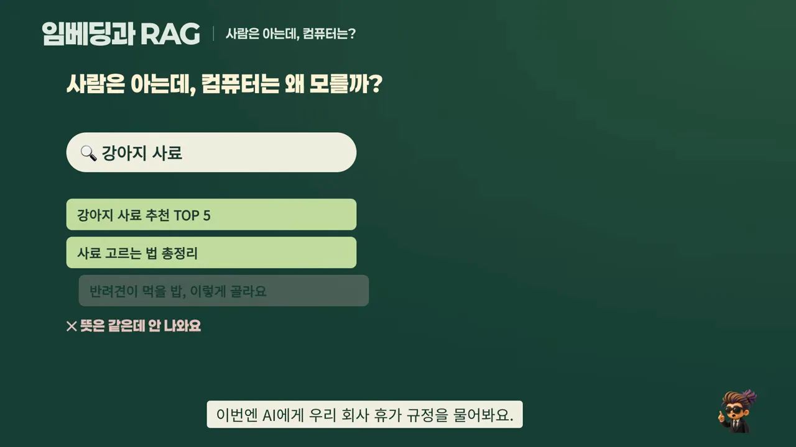
두 기술은 사내 챗봇, 상품 검색과 추천, 고객센터 AI에 많이 쓰여요. 오른쪽 막대가 애플 뮤직 사례예요. 기존 검색에 임베딩 검색을 더했더니, 검색 결과가 하나도 안 나오는 경우가 86% 줄었어요. 슬라이드 아래에 출처로 arXiv 논문 번호가 적혀 있어요.
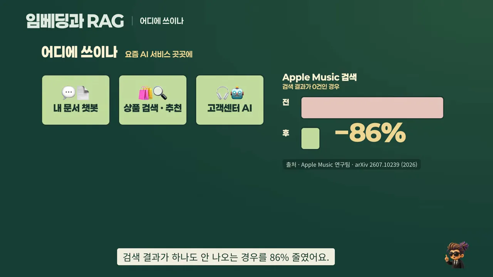
보통 검색은 글자를 맞춰 봐요
왜 못 찾았는지는 노란 강조를 보면 바로 보여요. '강아지 사료 추천 TOP 5'는 검색어의 '강아지'와 '사료' 두 글자가 그대로 들어 있어서 걸려요. '반려견이 먹을 밥 뭐가 좋아?'는 겹치는 글자가 하나도 없어서 못 찾고요.
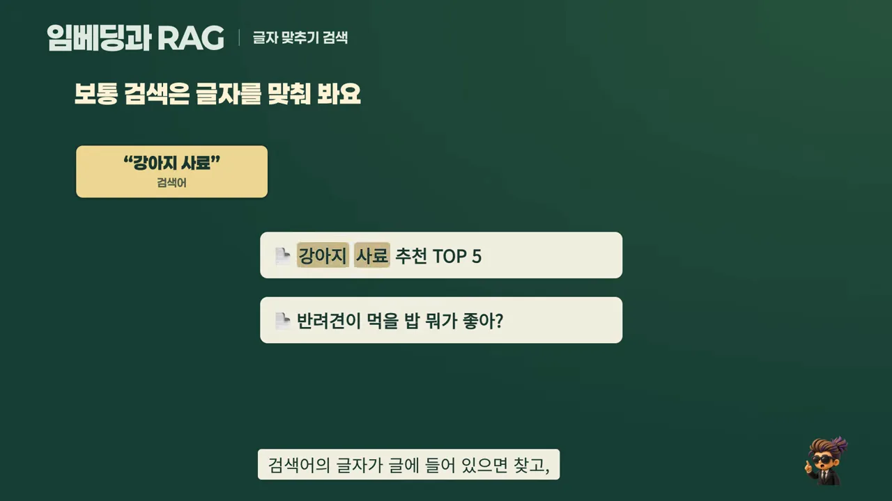
임베딩: 문장을 숫자로 바꿔요
그럼 글자 말고 뜻을 비교하면 돼요. 컴퓨터가 뜻을 비교할 수 있게 문장을 숫자로 바꾸는 방법이 임베딩이에요. 슬라이드에서 '강아지 사료 추천해 줘'가 임베딩 모델(bge-m3)을 지나면 오른쪽처럼 0.021, -0.113… 같은 숫자 목록이 돼요. 이 모델은 문장마다 숫자 1,024개를 만들고, 이렇게 숫자를 줄지어 놓은 목록을 벡터라고 불러요.
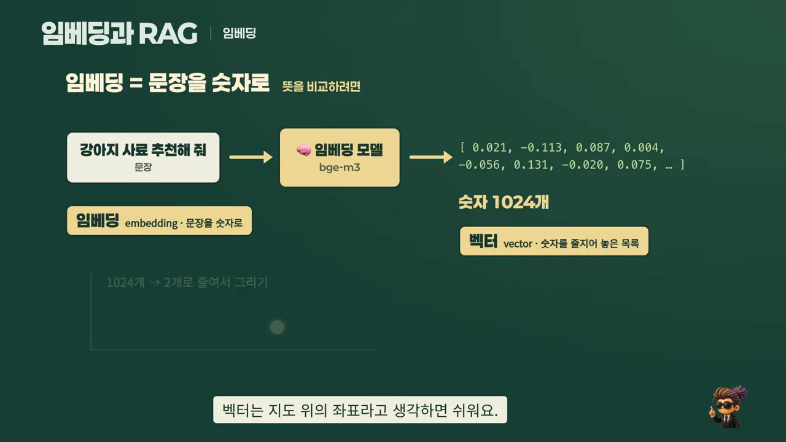
벡터는 지도 위 좌표로 생각하면 쉬워요. 1,024개 숫자는 그릴 수 없으니, 영상은 두 개로 줄여서 지도에 찍어요(PCA(Principal Component Analysis)로 줄였다고 화면 왼쪽 아래에 적혀 있어요). 왼쪽 점선 원에는 강아지 사료, 반려견 밥, 고양이 간식 문장이, 오른쪽 원에는 기준금리, 예금 상품, 주택담보대출 금리 문장이 모여 있어요. 그림이 아니라 실제로 계산한 위치예요.
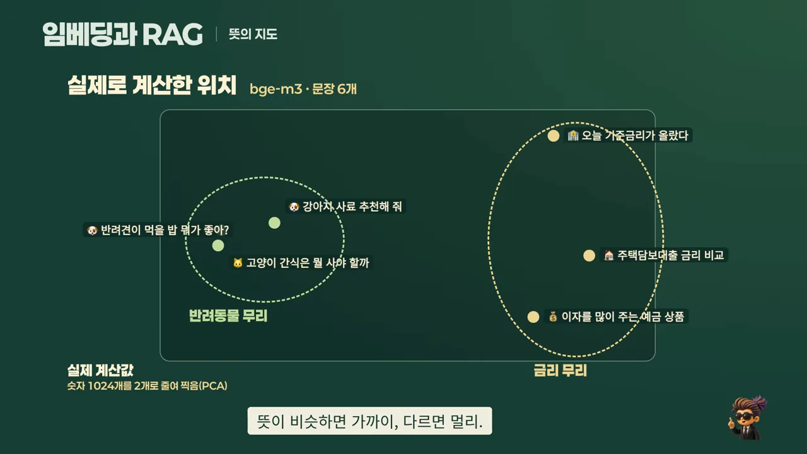
가까운 정도는 각도로 재요
두 문장이 얼마나 가까운지는 원점에서 뻗은 두 화살표 사이 각도로 재요. 이게 코사인 유사도예요. 오른쪽 막대처럼 같은 방향이면 1(비슷), 직각이면 0(상관없음), 반대 방향이면 -1(반대)이에요. 1에 가까울수록 뜻이 비슷한 문장이에요.
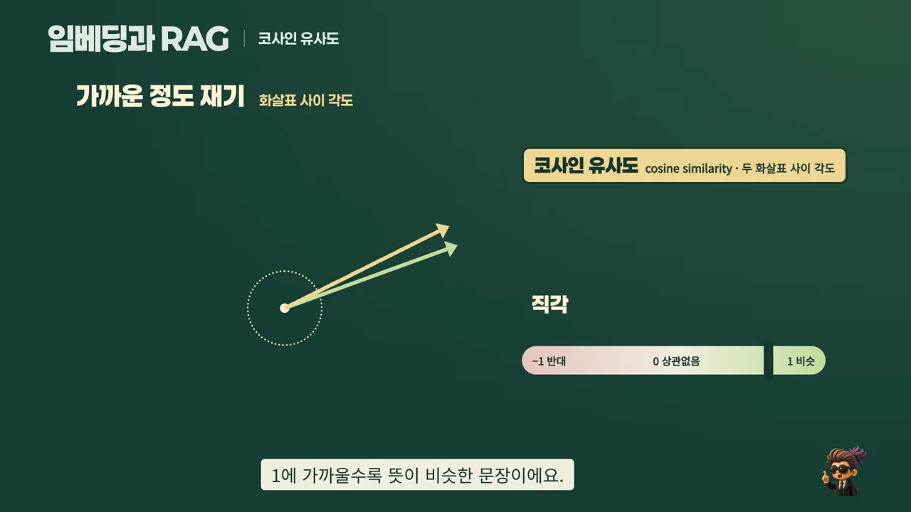
모델이 뜻을 어떻게 알게 됐는지는 이 슬라이드가 보여 줘요. 'Q 강아지 사료 추천?'과 'A 이 사료가 인기예요'처럼 질문과 그 답은 짝이라 가까이 당기고, 짝이 아닌 문장은 멀리 밀어요. 이걸 아주 많은 문장 짝으로 반복하면 뜻이 같은 문장끼리 모이는 지도가 만들어져요. 이 방법을 대조 학습이라고 해요.
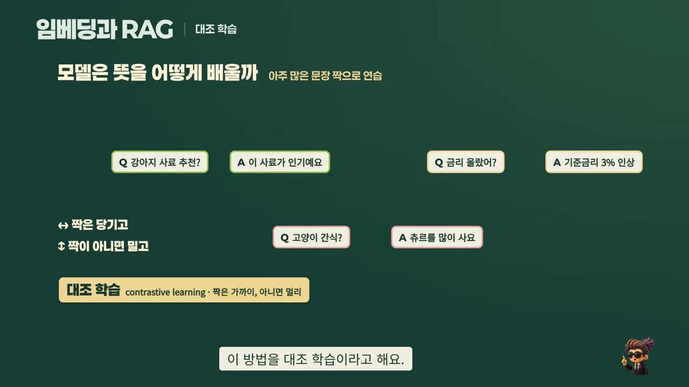
직접 재 본 유사도와 임베딩의 약점
이제 진짜로 재 봐요. 영상은 문장 여섯 개를 숫자로 바꾸고 서로 얼마나 비슷한지 재는 짧은 파이썬 코드(heatmap.py)를 보여 줘요. 코드는 세 부분이에요. 문장 파일을 읽어 한 줄에 한 문장씩 목록을 만들고, bge-m3 모델로 문장마다 숫자 1,024개를 만들고(normalize_embeddings=True로 화살표 길이를 1로 맞춰요), 마지막에 벡터끼리 곱해요. 아래 화면은 그 마지막 부분이에요.
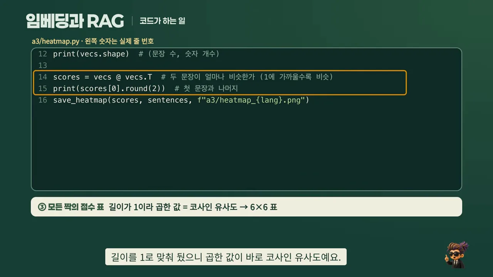
터미널에서 실행하면 (6, 1024)가 먼저 찍혀요. 문장 6개, 문장마다 숫자 1,024개라는 뜻이에요. 그 아래 노란 줄이 첫 문장 '강아지 사료 추천해 줘'와 나머지의 점수예요. 자기 자신은 1, '반려견이 먹을 밥'은 0.73, 고양이 간식은 0.69, 금리 문장 셋은 0.45, 0.46, 0.4예요.
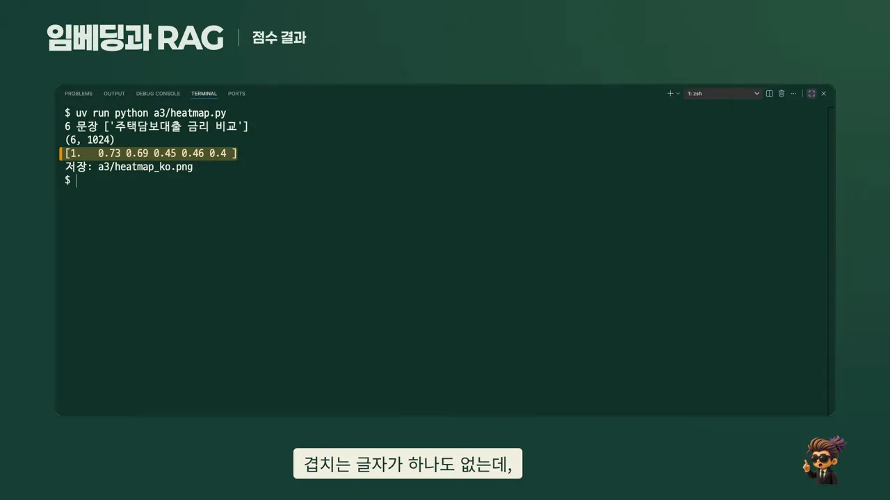
표 전체를 색 진하기로 칠한 그림이 히트맵이에요. 대각선의 1.00은 자기 자신이에요. 왼쪽 위 3×3(반려동물 문장끼리)은 0.69~0.73으로 붉고, 오른쪽 아래 3×3(금리 문장끼리)은 0.52~0.58로 노란 테두리가 쳐져 있어요. 두 무리 사이 칸은 0.30~0.46으로 옅어요.
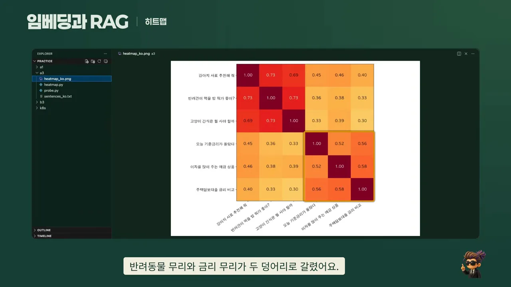
임베딩도 헷갈려요
그럼 임베딩은 늘 믿을 만할까요? 영상은 헷갈리기 쉬운 문장 짝 다섯 개를 재요(probe.py). 위 두 줄이 강조돼 있는데, 뜻이 다른 '배가 아파서…'와 '배를 타고…'가 0.71로, 뜻이 같은 '복통이 심해서…'(0.66)보다 높아요.
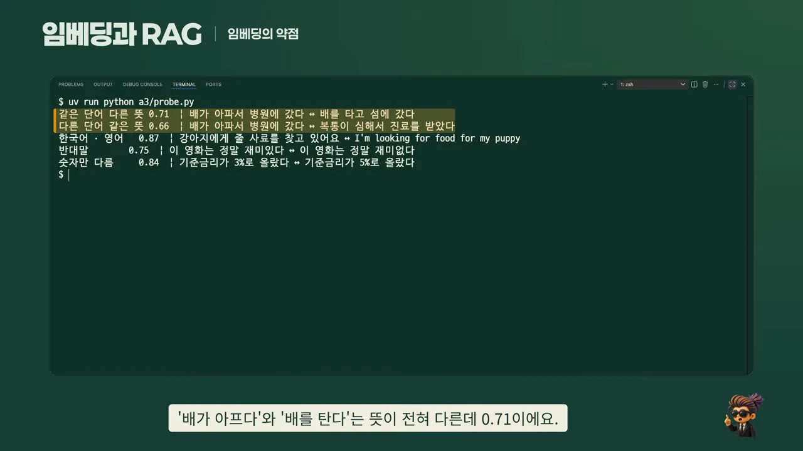
다섯 짝을 표로 옮기면 이래요. 숫자가 높을수록 모델이 '가깝다'고 본 거예요.
| 짝의 종류 | 문장 짝 | 점수 | 맞게 본 걸까요 |
|---|---|---|---|
| 같은 단어, 다른 뜻 | 배가 아파서 병원에 갔다 ↔ 배를 타고 섬에 갔다 | 0.71 | 아니요. 너무 높아요 |
| 다른 단어, 같은 뜻 | 배가 아파서 병원에 갔다 ↔ 복통이 심해서 진료를 받았다 | 0.66 | 아니요. 위 짝보다 낮아요 |
| 반대말 | 이 영화는 정말 재미있다 ↔ 이 영화는 정말 재미없다 | 0.75 | 아니요. 반대 뜻인데 높아요 |
| 숫자만 다름 | 기준금리가 3%로 올랐다 ↔ 기준금리가 5%로 올랐다 | 0.84 | 아니요. 숫자를 못 가려요 |
| 한국어 · 영어 | 강아지에게 줄 사료를 찾고 있어요 ↔ I'm looking for food for my puppy | 0.87 | 네. 언어가 달라도 뜻이 같으면 가까워요 |
정리하면 임베딩은 문장 모양이 비슷하면 가깝게 봐서 반대말과 숫자를 잘 못 가려요. 대신 언어가 달라도 뜻이 같으면 한 지도에 모여요.
그래서 섞어 써요
현업에서는 임베딩만 믿지 않아요. 슬라이드처럼 질문('기준금리 3%')을 위쪽 뜻 검색(임베딩, 비슷한 뜻)과 아래쪽 글자 검색(정확한 이름, 숫자)에 동시에 보내고, 오른쪽에서 두 목록의 좋은 점을 합쳐 하나의 결과로 만들어요. 이렇게 섞는 걸 하이브리드 검색이라고 해요.
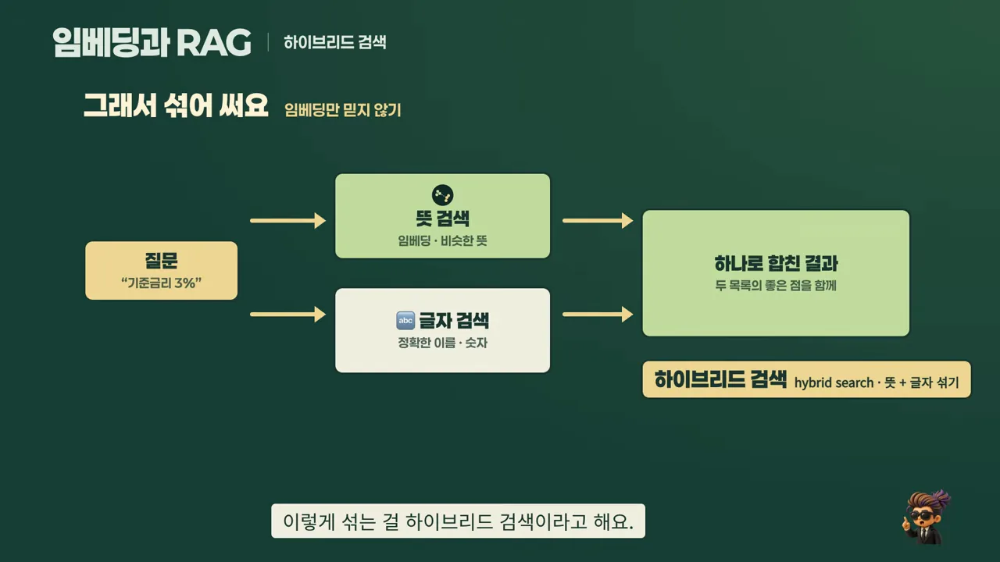
RAG = 찾아서, 붙이고, 답하기
두 번째 문제, AI가 내 문서를 모르는 문제로 넘어가요. 영상은 AI에게 '애플 뮤직 검색 팀이 2026년 논문에서 빈 결과를 얼마나 줄였나'를 묻는 코드(ask.py)를 두 번 돌려요. 터미널 첫 번째 결과는 문서 없이 질문만 보낸 것이라 '확인할 수 없다'고 답해요. 맨 아래 노란 줄은 --doc 옵션으로 문서 한 줄을 같이 보낸 결과인데, 이번엔 86%라고 정확히 답해요.
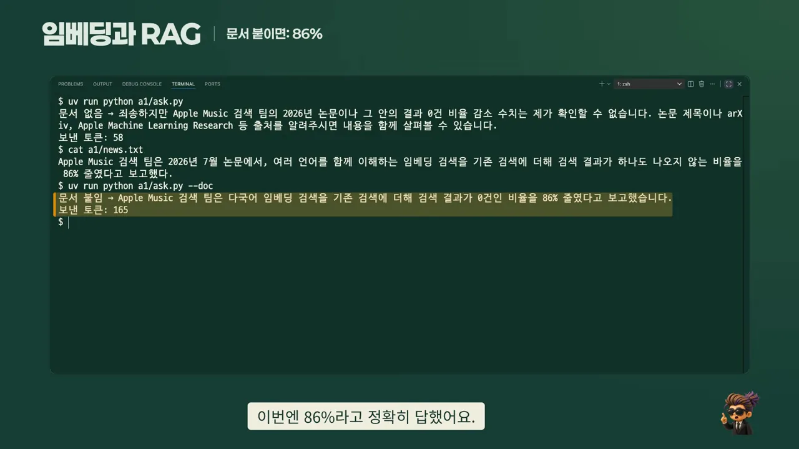
LLM은 왜 내 문서를 모를까요
챗GPT나 클로드 같은 AI를 LLM이라고 불러요. 슬라이드 가운데 '공부한 글' 카드에 '공부 마감일' 도장이 찍혀 있어요. LLM은 정해진 날짜까지 모은 글로 공부를 끝낸 모델이라, 오른쪽 두 카드처럼 그 뒤에 생긴 일과 공개된 적 없는 내 문서는 몰라요. 모르는 걸 물으면 모른다고 하거나 그럴듯하게 지어내는데, 이렇게 지어낸 답을 환각이라고 해요.
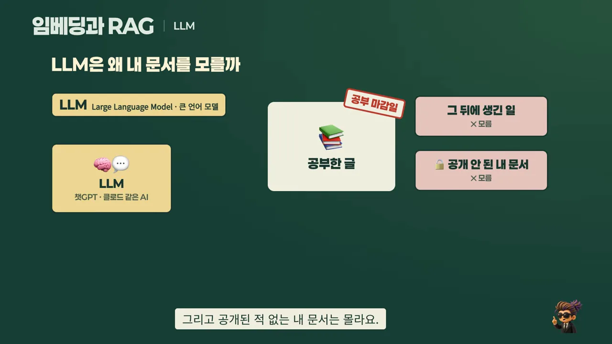
찾아서, 붙이고, 답하기
그럼 문서를 전부 붙이면 될까요? 몇 장이면 괜찮지만 수천 개면 한 번에 넣을 수 없어요. 넣을 수 있는 양에 한도가 있고, 많이 넣을수록 비용도 늘어요. 그래서 질문에 맞는 부분만 골라 붙여요. 슬라이드의 세 칸이 RAG라는 이름의 세 단어와 그대로 짝지어져 있어요. Retrieval은 찾기, Augmented는 붙이기, Generation은 답하기예요. 우리말로는 검색 증강 생성, 찾은 자료로 보강해서 답을 만든다는 뜻이에요.
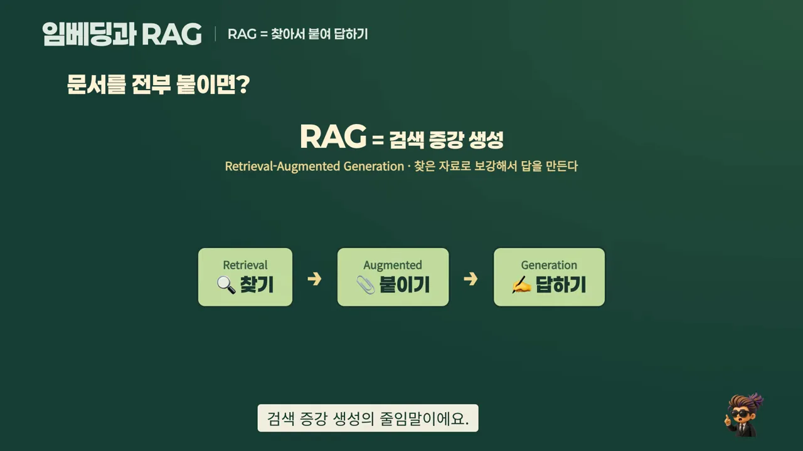
영상은 오픈북 시험에 비유해요. 왼쪽 '외워서 푸는 시험'은 모르는 문제(문제 7)를 비워 두거나 지어내요. 오른쪽 '오픈북 시험'은 맞는 쪽을 찾아 보고 쓰고, 답 옆에 p.42처럼 본 쪽을 적어요. RAG는 AI가 책을 들고 시험장에 들어가게 해 주고, 몇 쪽을 보고 썼는지 적게 해서 사람이 확인할 수 있게 해요.
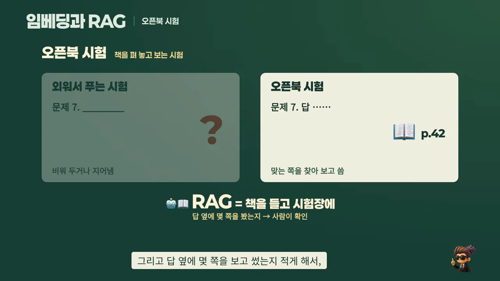
내 문서를 모델에게 다시 공부시키는 파인튜닝도 있어요. 왼쪽 분홍 카드처럼 문서가 바뀌면 다시 공부시켜야 해서, 바뀔 때마다 시간과 비용이 들어요. 오른쪽 초록 카드의 RAG는 자료만 바꿔 끼우면 끝나요. 그래서 자주 바뀌는 문서에는 보통 RAG를 먼저 써요.
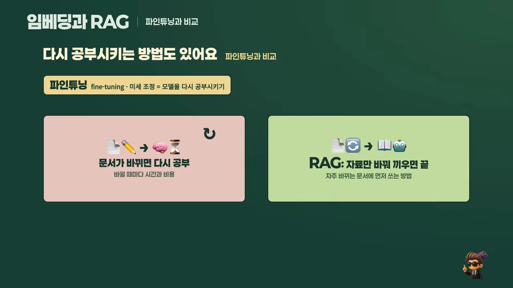
RAG는 이렇게 움직여요
영상은 RAG를 두 부분으로 나눠 그려요. 질문이 오기 전에 한 번 해 두는 준비, 그리고 질문이 올 때마다 하는 일이에요. 여러 장의 슬라이드에 걸쳐 나온 흐름을 한 장으로 모으면 이래요.
flowchart LR
subgraph P["① 준비 (한 번)"]
D["문서 불러오기"] --> C["청크로 자르기"] --> E1["청크마다 임베딩"] --> DB[("벡터 데이터베이스")]
end
subgraph Q["② 질문마다"]
QQ["질문"] --> E2["같은 임베딩으로 벡터"] --> R["가까운 청크 몇 개 꺼내기 (검색)"] --> G["번호 붙여 LLM에 보내기"] --> A["출처 번호 달린 답 (생성)"]
end
DB -.-> R
준비 단계 슬라이드를 보면 '문서 불러오기' 뒤의 가위 표시에서 문서가 여러 장의 카드로 잘리고, 카드마다 0.02, -0.11… 같은 숫자 줄이 붙은 뒤 오른쪽 '벡터 저장'으로 들어가요. 잘라 둔 조각 하나를 청크, 자르는 일을 청킹이라고 해요.
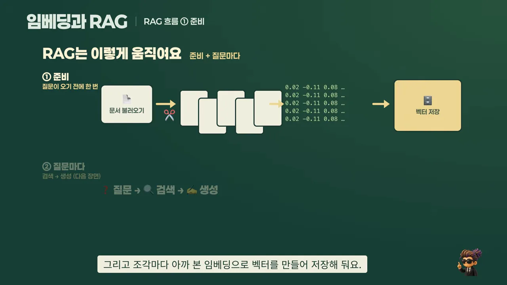
왜 자를까요? 영상은 두꺼운 책을 통째로 들고 다니는 대신 메모 카드에 나눠 적는 것과 같다고 해요. 왼쪽처럼 책 전체를 벡터 하나로 만들면 여러 이야기가 섞여 '흐린 점'이 돼요. 오른쪽처럼 카드 여섯 장으로 나누면 카드마다 점이 하나씩 생기고, 질문에 맞는 카드(여기서는 카드 5)만 골라 붙일 수 있어요. 이 벡터들을 저장해 두고 가까운 것을 빨리 찾아 주는 저장소를 벡터 데이터베이스라고 해요.
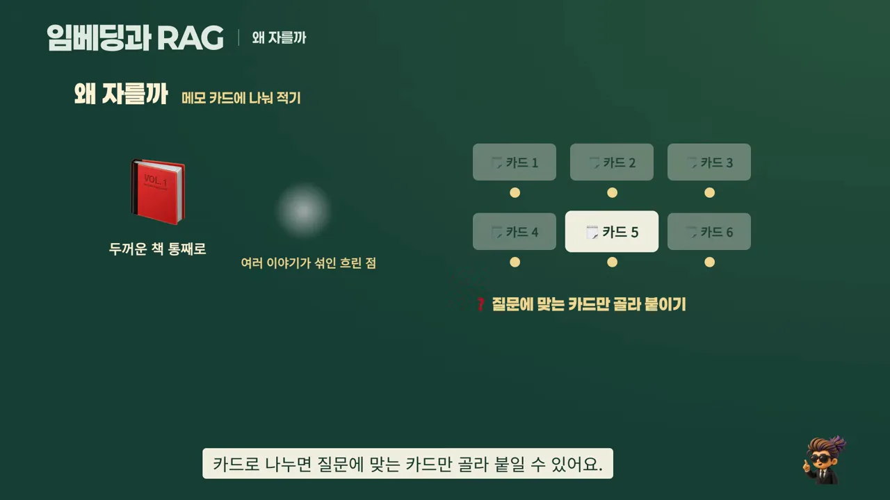
질문이 오면 질문도 같은 임베딩으로 벡터로 바꾸고, 지도에서 가장 가까운 청크 몇 개를 꺼내요(검색). 슬라이드에서 질문 점 주변의 노란 점 네 개가 [1]~[4] 청크로 뽑혀 LLM에게 가요. LLM에게는 '아래 자료만 보고 답하고 근거 번호를 달라'고 보내고, LLM은 '[1][2]'처럼 출처 번호가 달린 답을 써요(생성).
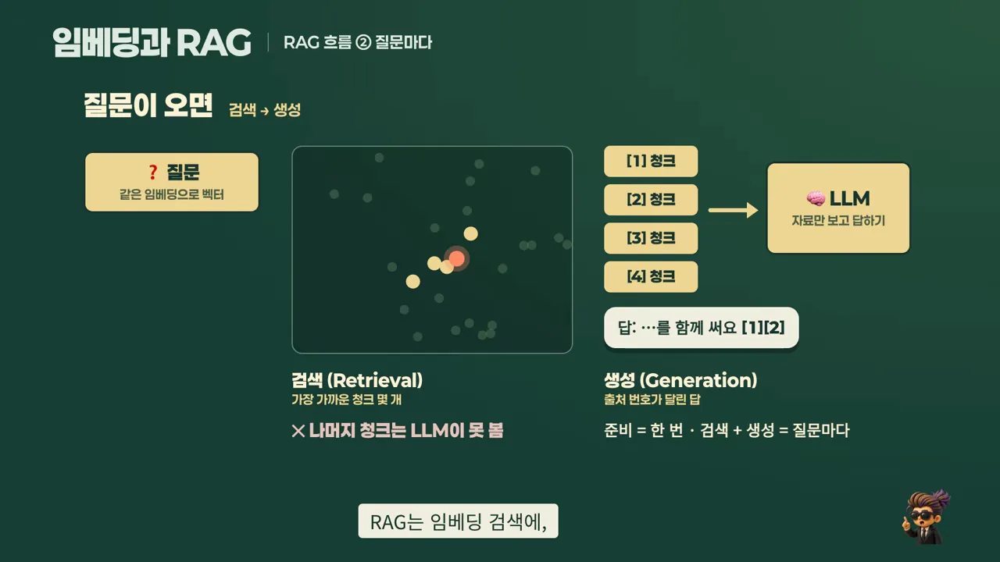
실제 문서로 돌려 본 RAG와 틀리는 순간
이제 실제 문서로 돌려요. 자료는 쿠버네티스 공식 문서의 한국어 번역이에요. 쿠버네티스는 서버 프로그램을 운영하는 도구인데, 그중 개념 설명 문서 155개, 1,103,975자를 썼어요. 500자 안팎으로 잘라 청크 3,033개를 만들어 뒀고요. 사람이 다 읽고 답하기는 어려운 양이에요.
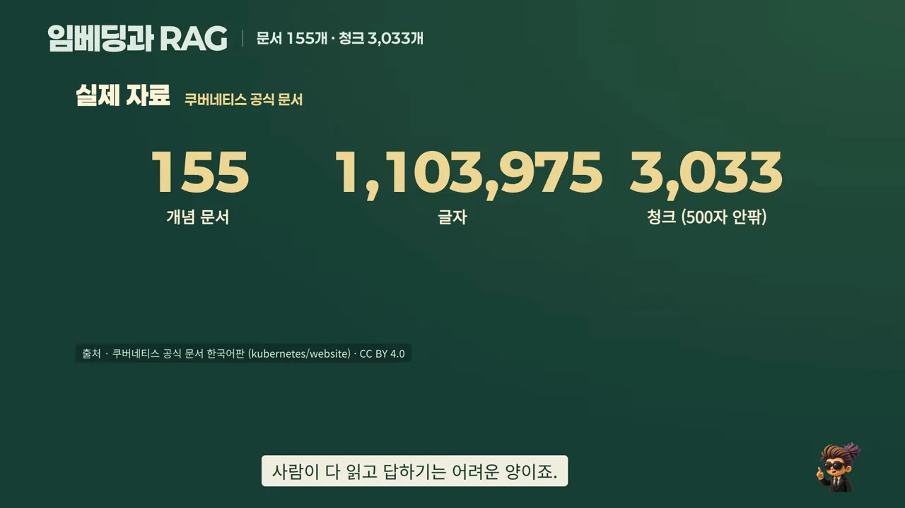
RAG 코드(rag.py)는 40줄이 안 돼요. 노란 상자의 18~20줄이 검색이에요. 질문을 벡터로 바꾸고(embed.encode), 미리 만든 청크 벡터 3,033개와 한꺼번에 곱해(vecs @ q) 점수가 높은 순서로 k=4개를 꺼내요. 그 아래 25줄은 꺼낸 청크에 1번부터 번호와 문서 제목을 달아 한 글로 이어 붙이고, 26~28줄은 지시문과 함께 LLM에게 보내요.
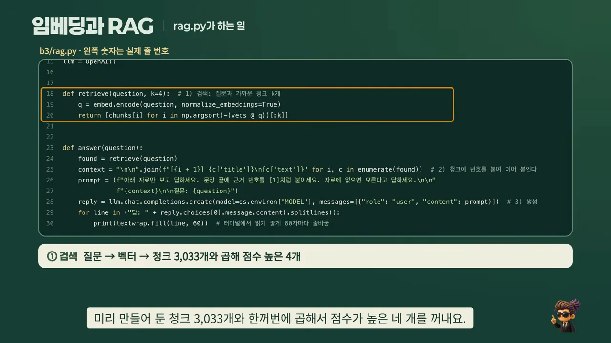
첫 질문은 '파드 안의 컨테이너들은 무엇을 함께 쓰나요?'예요. 파드는 쿠버네티스에서 프로그램을 묶어 돌리는 단위예요. 답은 네트워크, 공유 네임스페이스, 공유 파일 시스템 볼륨을 함께 쓴다는 내용이고, 문장 끝마다 [4][1], [2], [3] 같은 번호가 붙어요. 아래 [1]~[4] 출처는 전부 파드 문서(k8s/ko/workloads/pods/_index.md)예요.
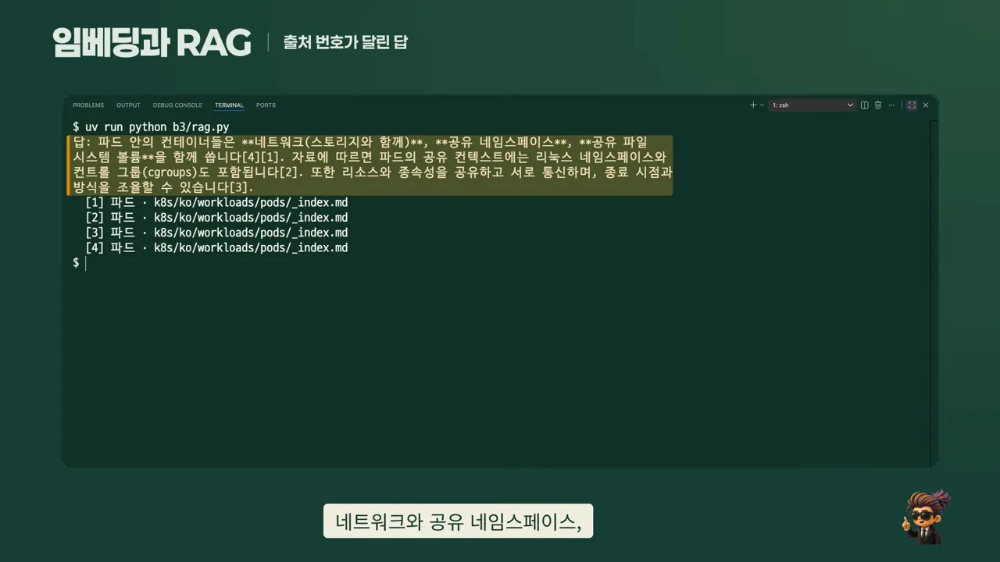
답이 있는데 '모른다'고 해요
두 번째 질문은 '디플로이먼트를 이전 버전으로 되돌리려면 어떻게 하나요?'예요. 디플로이먼트는 프로그램을 새 버전으로 바꿔 주는 기능이에요. 답은 '자료에 구체적인 방법이 없다'였어요. 그런데 디플로이먼트 문서에는 되돌리는 명령이 그대로 나와 있어요. 모른다고 하라는 지시는 잘 지켰지만, 문서에 답이 있었으니 사용자에게는 틀린 답이에요.
영상은 LLM에게 넘긴 청크를 직접 찍어 보는 코드(peek.py)를 돌려요. 노란 네 줄이 넘긴 청크인데, 점수 0.672, 0.665, 0.664, 0.661로 모두 디플로이먼트 문서에서 왔어요. 문서는 제대로 찾은 거예요. 하지만 되돌리는 방법이 적힌 청크는 그 안에 없어요. 마지막 줄을 보면 정답 명령이 든 청크의 순위는 12위, 73위, 147위이고, 가장 높은 것도 점수 0.642예요.
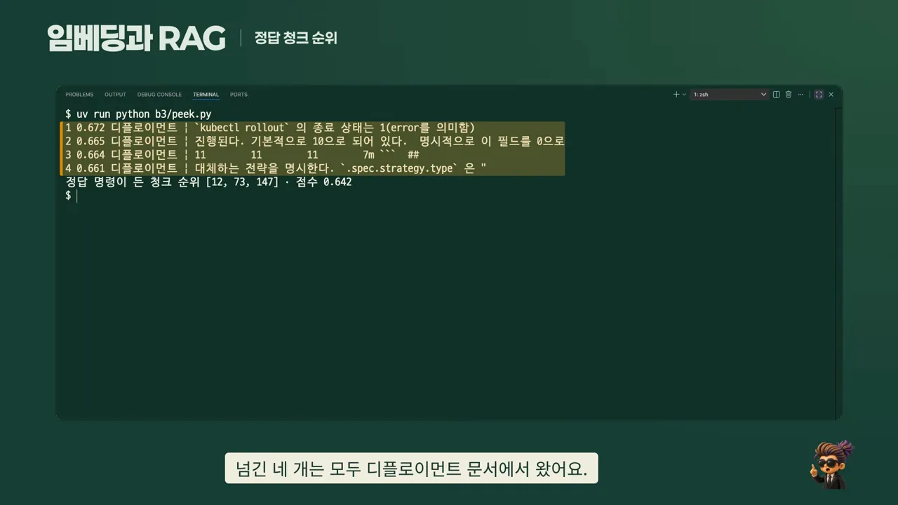
상위 12개 점수를 막대로 그리면 이유가 보여요. 초록 막대 1~4위만 LLM에게 가고, 흰 막대 5~11위는 0.651~0.659로 거의 같은 높이예요. 주황색 12위(0.642)가 정답 청크예요. 디플로이먼트 문서 하나가 여러 청크로 나뉘어 있고 질문이 그 청크들과 모두 비슷하니, 점수가 촘촘하게 붙어서 정답이 조금만 밀려도 네 개 안에 못 들어와요.
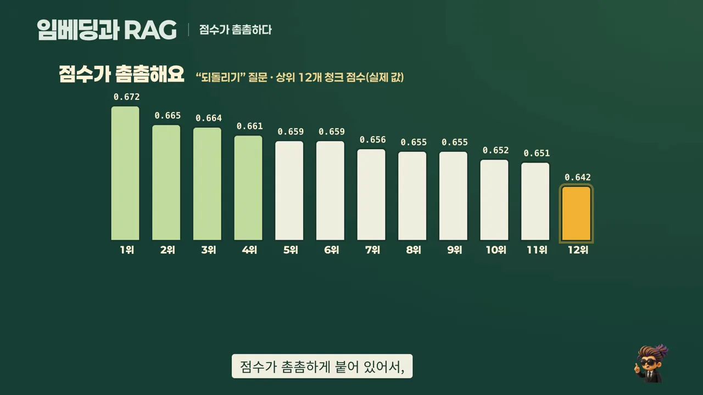
그래서 영상은 RAG 품질의 절반은 검색이라고 말해요. LLM이 아무리 좋아도 받은 청크 밖의 내용은 몰라요. 답이 틀리면 LLM보다 먼저 검색된 청크를 들여다봐야 해요.
고치는 방법과 정리
고치는 방법도 여러 가지예요. 슬라이드 왼쪽에 세 가지가 있어요. 앞에서 본 하이브리드 검색(뜻 + 글자), 리랭킹(후보를 다시 줄 세우기), 청크 자르는 방식 바꾸기(크기, 겹침, 문단)예요. 오른쪽 '예시 그림'이 리랭킹이에요. 처음 검색에서 7번째쯤에 있던 주황색 정답 청크가, 더 꼼꼼한 모델로 다시 순위를 매기자 맨 위로 올라와요.
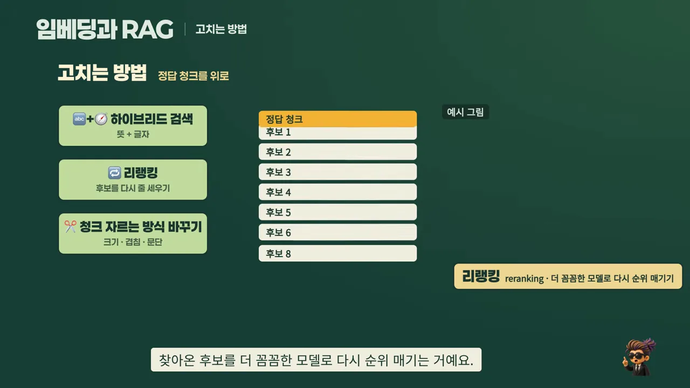
빅테크도 같은 고민을 해요. 왼쪽 막대가 Anthropic의 실험이에요. 청크마다 문서 맥락을 한 줄 붙이고, 글자 검색과 리랭킹까지 더해서 검색이 정답을 놓치는 비율을 5.7%에서 1.9%로 줄였다고 공개했어요. 오른쪽 '성적표'가 영상의 결론이에요. 정답을 아는 질문 묶음을 만들어 두고, 기법을 하나 더할 때마다 점수를 재요.
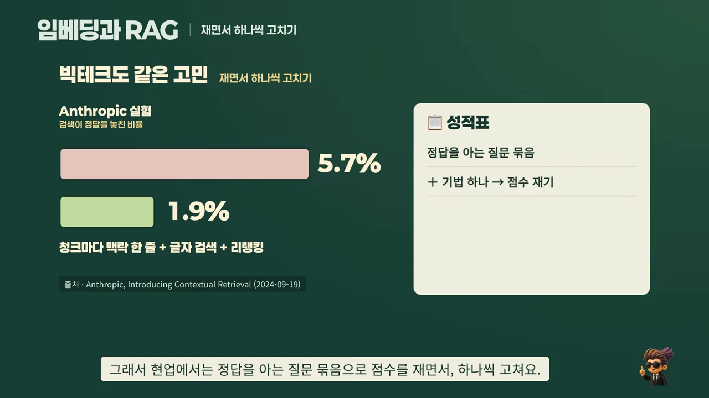
정리
영상의 마지막 슬라이드는 세 장의 카드로 끝나요. 임베딩은 문장을 뜻의 지도 위 점으로 바꾸고, 글자가 달라도 뜻이 같으면 가까워요. 다만 반대말과 숫자는 약해요. RAG는 청크를 임베딩으로 찾아 LLM에게 붙여 주고, 출처 번호를 단 답을 쓰게 해요. 그리고 틀리면 검색부터 봐요.
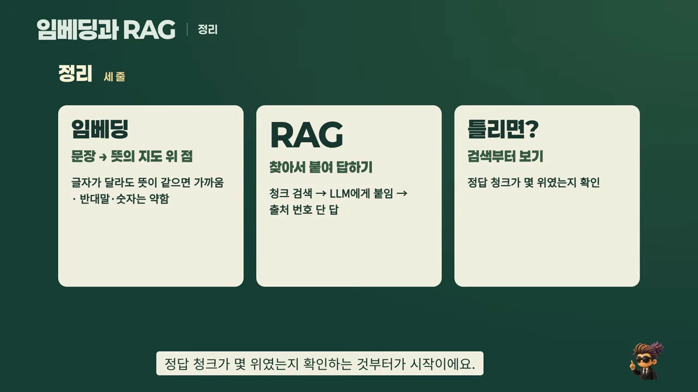
영상이 마지막에 짚은 용어를 한 줄씩 다시 모으면 이래요.
| 용어 | 영상의 한 줄 설명 |
|---|---|
| 임베딩 | 문장을 벡터(숫자 목록)로 바꾸는 것 |
| 코사인 유사도 | 두 화살표 사이 각도로 잰 가까운 정도 |
| RAG | 찾아서 붙여 답하는 검색 증강 생성 |
| 청크 | 잘라 둔 문서 조각 |
| 하이브리드 검색 | 뜻 검색과 글자 검색을 섞는 것 |
| 리랭킹 | 후보를 다시 줄 세우는 것 |